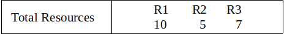
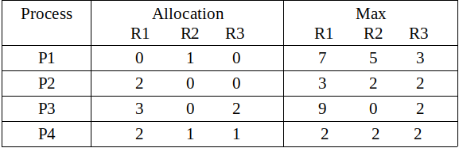

Prerequisite – Resource Allocation Graph (RAG), Banker’s Algorithm, Program for Banker’s Algorithm
Banker’s Algorithm is a resource allocation and deadlock avoidance algorithm. This algorithm test for safety simulating the allocation for predetermined maximum possible amounts of all resources, then makes an “s-state” check to test for possible activities, before deciding whether allocation should be allowed to continue.
In simple terms, it checks if allocation of any resource will lead to deadlock or not, OR is it safe to allocate a resource to a process and if not then resource is not allocated to that process. Determining a safe sequence(even if there is only 1) will assure that system will not go into deadlock.
Banker’s algorithm is generally used to find if a safe sequence exist or not. But here we will determine the total number of safe sequences and print all safe sequences.
The data structure used are:
- Available vector
- Max Matrix
- Allocation Matrix
- Need Matrix
Example:
Input :   Output : Safe sequences are: P2--> P4--> P1--> P3 P2--> P4--> P3--> P1 P4--> P2--> P1--> P3 P4--> P2--> P3--> P1 There are total 4 safe-sequences
Explanation –
Total resources are R1 = 10, R2 = 5, R3 = 7 and allocated resources are R1 = (0+2+3+2 =) 7, R2 = (1+0+0+1 =) 2, R3 = (0+0+2+1 =) 3. Therefore, remaining resources are R1 = (10 – 7 =) 3, R2 = (5 – 2 =) 3, R3 = (7 – 3 =) 4.
Remaining available = Total resources – allocated resources
and
Remaining need = max – allocated

So, we can start from either P2 or P4. We can not satisfy remaining need from available resources of either P1 or P3 in first or second attempt step of Banker’s algorithm. There are only four possible safe sequences. These are :
P2–> P4–> P1–> P3
P2–> P4–> P3–> P1
P4–> P2–> P1–> P3
P4–> P2–> P3–> P1
Code –
// CPP Program to Print all possible safe sequences using banker's algorithm
#include <iostream>
#include <string.h>
#include <vector>
// total number of process
#define P 4
// total number of resources
#define R 3
// total safe-sequences
int total = 0;
using namespace std;
// function to check if process
// can be allocated or not
bool is_available(int process_id, int allocated[][R],
int max[][R], int need[][R], int available[])
{
bool flag = true;
// check if all the available resources
// are less greater than need of process
for (int i = 0; i < R; i++) {
if (need[process_id][i] > available[i])
flag = false;
}
return flag;
}
// Print all the safe-sequences
void safe_sequence(bool marked[], int allocated[][R], int max[][R],
int need[][R], int available[], vector<int> safe)
{
for (int i = 0; i < P; i++) {
// check if it is not marked
// already and can be allocated
if (!marked[i] && is_available(i, allocated, max, need, available)) {
// mark the process
marked[i] = true;
// increase the available
// by deallocating from process i
for (int j = 0; j < R; j++)
available[j] += allocated[i][j];
safe.push_back(i);
// find safe sequence by taking process i
safe_sequence(marked, allocated, max, need, available, safe);
safe.pop_back();
// unmark the process
marked[i] = false;
// decrease the available
for (int j = 0; j < R; j++)
available[j] -= allocated[i][j];
}
}
// if a safe-sequence is found, display it
if (safe.size() == P) {
total++;
for (int i = 0; i < P; i++) {
cout << "P" << safe[i] + 1;
if (i != (P - 1))
cout << "--> ";
}
cout << endl;
}
}
// Driver Code
int main()
{
// allocated matrix of size P*R
int allocated[P][R] = { { 0, 1, 0 },
{ 2, 0, 0 },
{ 3, 0, 2 },
{ 2, 1, 1 } };
// max matrix of size P*R
int max[P][R] = { { 7, 5, 3 },
{ 3, 2, 2 },
{ 9, 0, 2 },
{ 2, 2, 2 } };
// Initial total resources
int resources[R] = { 10, 5, 7 };
// available vector of size R
int available[R];
for (int i = 0; i < R; i++) {
int sum = 0;
for (int j = 0; j < P; j++)
sum += allocated[j][i];
available[i] = resources[i] - sum;
}
// safe vector for displaying a safe-sequence
vector<int> safe;
// marked of size P for marking allocated process
bool marked[P];
memset(marked, false, sizeof(marked));
// need matrix of size P*R
int need[P][R];
for (int i = 0; i < P; i++)
for (int j = 0; j < R; j++)
need[i][j] = max[i][j] - allocated[i][j];
cout << "Safe sequences are:" << endl;
safe_sequence(marked, allocated, max, need, available, safe);
cout << "\nThere are total " << total << " safe-sequences" << endl;
return 0;
}
Output:
Safe sequences are: P2--> P4--> P1--> P3 P2--> P4--> P3--> P1 P4--> P2--> P1--> P3 P4--> P2--> P3--> P1 There are total 4 safe-sequences